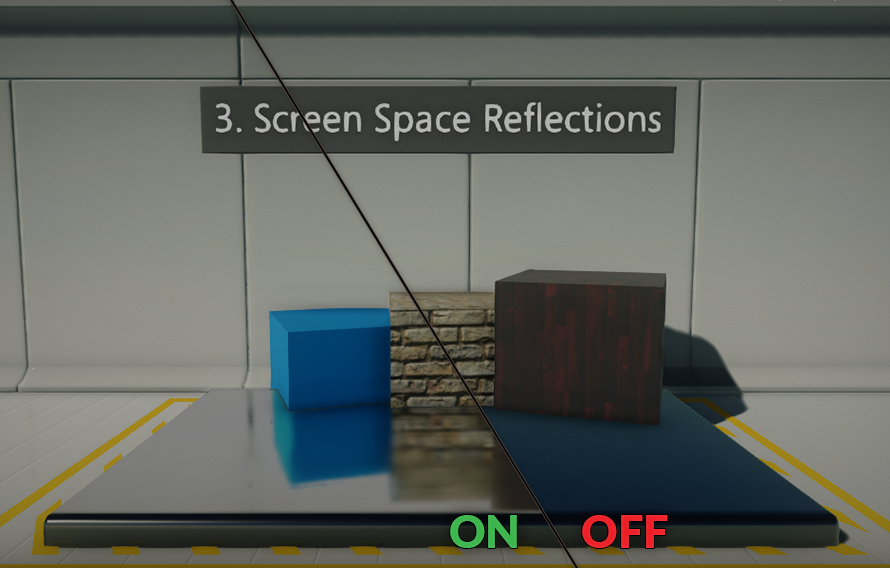

|
Является самым универсальным методом отражения на данный момент: Для отражения SSR использует только те ресурсы, которые видит сам игрок. Если какой-то объект хотя бы частично остаётся за кадром, то и его отражение в воде или в витрине не будет прорисовываться до конца. Такие ограничения разработчики маскируют, замыливая отражающую поверхность или растягивая края текстуры. |
 |